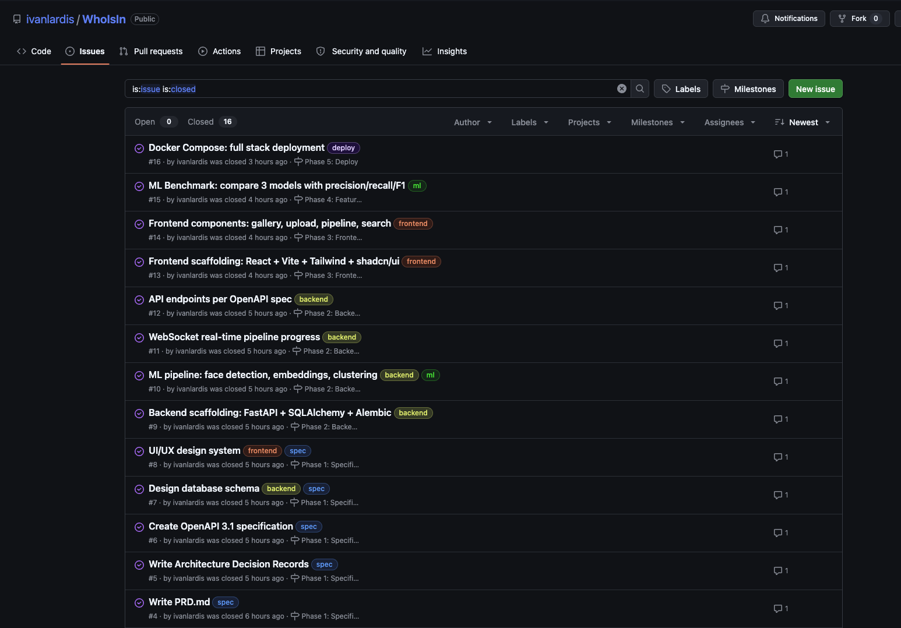
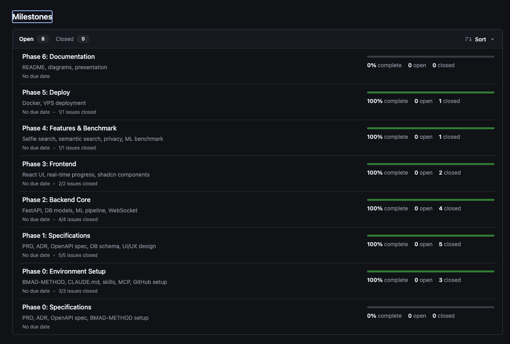
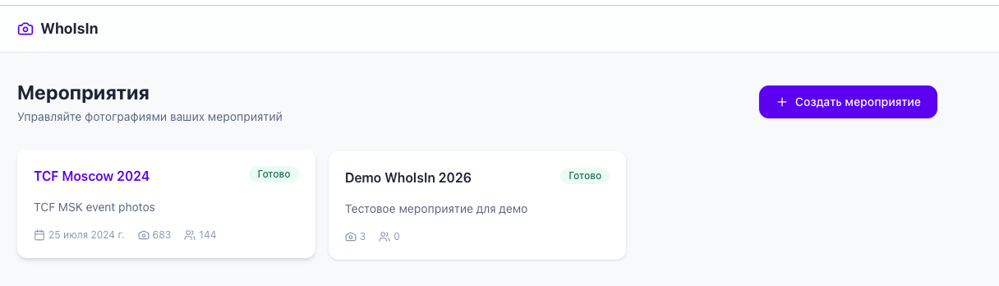
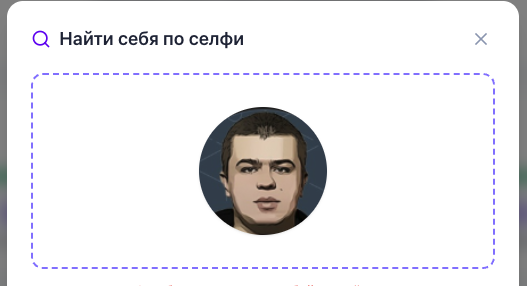
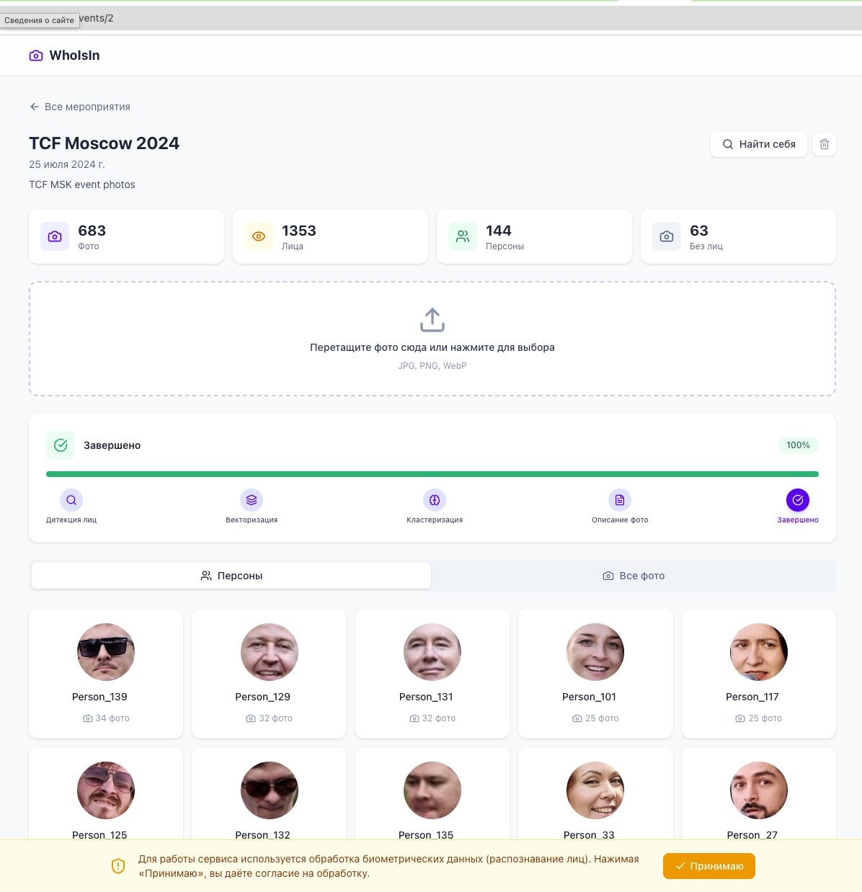
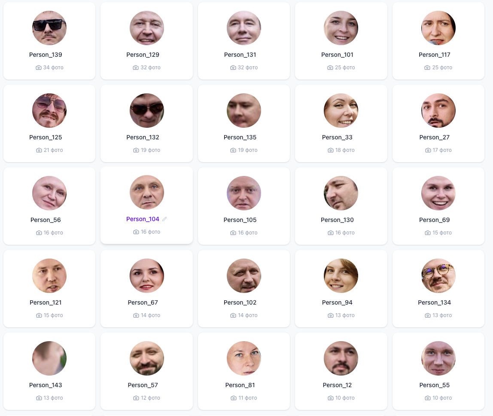

Интеллектуальный сервис сортировки фотографий по лицам
InsightFace · HDBSCAN · FastAPI · React · PostgreSQL + pgvector
Фотограф снял 500-1000 фото. Каждый участник хочет найти себя. Организатор вручную сортирует часами.
Загрузил фото → AI нашёл лица → сгруппировал по людям → участники находят себя по селфи за секунды
BMAD-METHOD · GitHub Issues · MCP Playwright
Полный цикл от PRD до деплоя за 1 день. Claude Code выступает в роли целой команды разработки.
BMAD (BMad Agentic Development) — это AI-driven agile методология, где Claude Code выступает в роли целой команды. Вместо найма специалистов, один AI-агент переключается между ролями: PM пишет PRD, Architect принимает архитектурные решения (ADR), UX Designer создаёт дизайн-систему, Developer пишет код, QA тестирует. Всё построено на spec-driven подходе: сначала спецификация, потом реализация. 43 специализированных скилла с чек-листами обеспечивают качество на каждом этапе.
| ADR-001 | ML Model → InsightFace |
| ADR-002 | Clustering → HDBSCAN |
| ADR-003 | Database → PostgreSQL + pgvector |
| ADR-004 | Frontend → React + shadcn/ui |
| ADR-005 | Pipeline → FastAPI WebSocket |
| ADR-006 | Descriptions → OpenRouter Gemini |
| ADR-007 | Deploy → Docker + VPS |
16 issues, 7 milestones, 6 кастомных labels — всё закрыто

Полное покрытие: от настройки окружения до деплоя на VPS

Кастомный Claude Code скилл для генерации design tokens
Чистые линии, много пространства, фокус на контенте. Выбран из 5 стилей через скилл UI/UX Pro Max.
Indigo (primary) · Emerald (CTA) · Amber (warning) · Slate (text)
Space Grotesk — заголовки
DM Sans — основной текст
JetBrains Mono — метрики

AI-агент сам тестирует приложение в реальном браузере — без тестовых скриптов
Model Context Protocol — стандарт от Anthropic, дающий LLM доступ к внешним инструментам. Claude Code через MCP управляет реальным браузером: открывает страницы, кликает, заполняет формы, делает скриншоты.
// Claude Code + MCP Playwright
> browser_navigate("localhost:5173")
Page loaded: WhoIsIn
> browser_click(ref="create-event")
Modal opened
> browser_type(ref="name", "TCF")
> browser_click(ref="submit")
Event created: id=1
> browser_take_screenshot()
✔ Saved: event-created.png
Не нужно писать тесты — AI сам понимает что проверять. Тестировали и на localhost, и на VPS. 13 скриншотов проанализированы AI.

Сравнение альтернатив и обоснование решений
Бенчмарк 3 моделей на реальных данных
| Модель | Скорость (CPU) | Размер | Качество | Embeddings | Вердикт |
|---|---|---|---|---|---|
| InsightFace buffalo_sc | ~150ms/фото | 16 MB | Высокое | ArcFace 512-dim | ✔ Выбрано |
| InsightFace buffalo_l | ~450ms/фото | 127 MB | Очень высокое | ArcFace 512-dim | Слишком медленно для CPU |
| dlib HOG + face_recognition | ~200ms/фото | ~100 MB | Среднее | 128-dim | Устаревшие embeddings |
| MTCNN + FaceNet | ~300ms/фото | ~90 MB | Хорошее | 128-dim | Сложная интеграция |
Группировка лиц без заранее известного числа людей
| Алгоритм | Нужен K? | Шум | Кластеры разного размера | Сложность |
|---|---|---|---|---|
| HDBSCAN | Нет | Да | Да | O(n log n) |
| K-Means | Да (K) | Нет | Нет | O(nKi) |
| DBSCAN | Нет, но нужен eps | Да | Нет | O(n log n) |
| Agglomerative | Да (threshold) | Нет | Да | O(n³) |
15 REST endpoints + WebSocket для real-time прогресса pipeline
Единая БД: реляционные данные + векторный поиск по embeddings (cosine similarity)
Детекция → Vectorize → Кластеризация → Описания (Gemini Flash)
Typed API client (orval) + React Query + WebSocket hooks
3 контейнера: db, backend, frontend. Reverse proxy + WebSocket + static caching
Django → FastAPI быстрее для async ML pipeline
MongoDB → pgvector = vector + relational в одной БД
Next.js → SPA + orval codegen проще для API-first
Kubernetes → overkill для одного VPS
Архитектура, pipeline, результаты
TCF Moscow 2024 — 682 фотографии с мероприятия


Загрузил фото → AI нашёл лица → Каждый нашёл себя